Créditos:
Propriedades de container para Grids (parte 2)
--:--Nesta aula vamos praticar mais (4)quatro propriedades que se aplicam a um "container" do tipo "Grid Layout" que aprendemos até aqui.
4 (quatro) novas propriedades de alinhamento
2:55Veja abaixo: as propriedades que serão aplicadas durante a esta aula:
Alinhamento Vertical e Horizontal
3:20
"Obsevação":
align = alinhamento (vertical).
vs
justify = alinhamento (horizontal).
Se trantando de "Grid", sempre que você olhar a palavra align, isto refere-se ao sentido do conteúdo na (vertical) = "de cima para baixo", e ao referir-se à palavra justify, é porque tem haver com o sentido do conteúdo na (horizontal) = "da esquerda para a direita ou vice-versa".
Lembrando a estrutura de Grid_Container:
4:35Abaixo temos um exemplo de Grid 3x3 = 3 Colunas e 3 Linhas que é = 9 Células|items.
Código base de /Grid_Container da aula anterior
4:45"LEMBRE" que: Essa é a estrutura HTML de um Container com os padrões estabelecidos no navegadores, as quais podemos dizer que não há estilo CSS ainda.
Abaixo temos o código da aula anterior com propriedades CSS definidas para o Container.
Usando a propriedade /align-itens: ;
5:48Qual a diferença de items para Content?
- Items =/ São cada célula(bloco item), que no exemplo da imagem abaixo é representado por 7(sete) quadrados de "A á G".
- Content =/ É o conjunto inteiro, e sobre isso veremos mais adiante.

O valor padrão da propriedade align-items é o valor: normal; , porém o normal é o valor: stretch;. O stretch estica o item de uma Grid-Line "verticalmente" a outra, até que ele caiba dentro da Grade, como podemos ver no exemplo abaixo:
Outros valores da propriedade align-items: ;
6:50Abaixo temos os valores da propriedade para alinhamento dos items na vertical.
-
start;
Quando usamos este valor; Ele faz com que todos os items colem no início da Grade."VEJA" a ação do valor no exemplo abaixo:
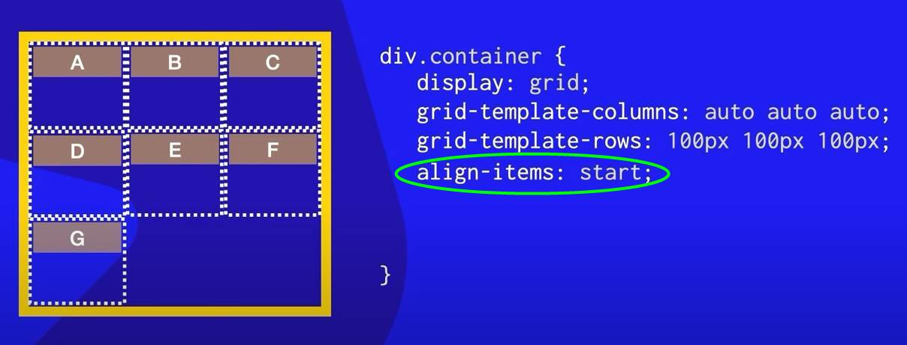Aplicando a propriedade aling-items com valor start. -
center;
Faz com que os items fiquem "verticalmente" centralizados, como podemos ver no exemplo da imagem baixo: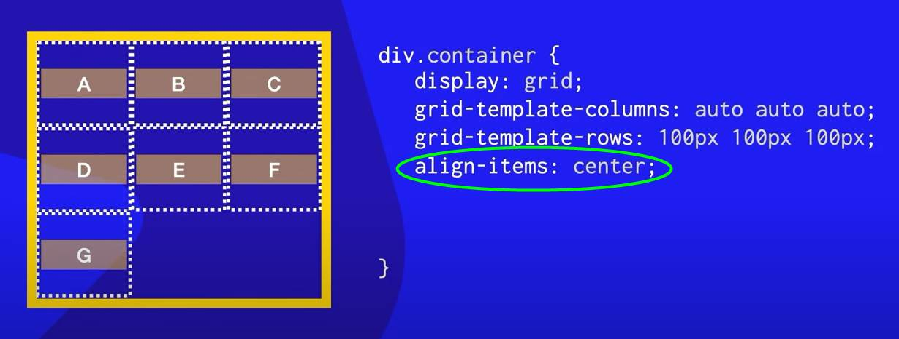Aplicando a propriedade aling-items com valor center. -
end;
Gruda todos os items na parte de baixo, como podemos ver no exemplo abaixo: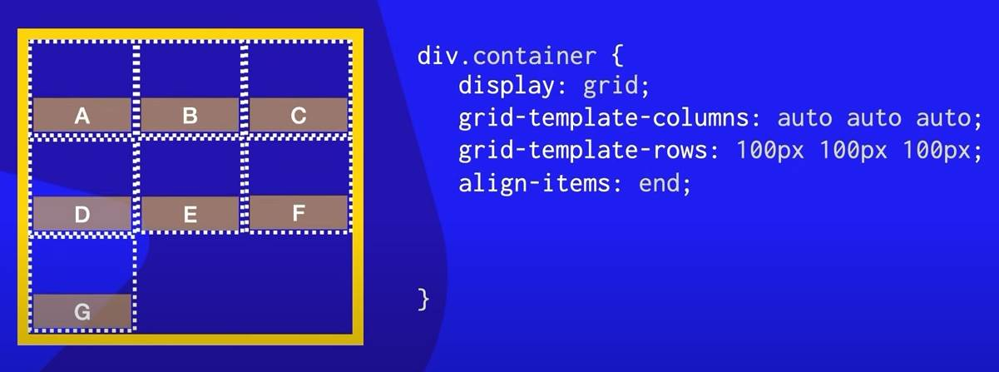Aplicando a propriedade aling-items com valor end.
Propriedade justify-items: ; e seus valores:
8:05Abaixo temos os valores da propriedade para alinhamento dos items na Horizontal.
-
Por padrão;
Esta propriedade possui o valor stretch que estica os items e seu alinhamento é feito "horizontalmente", como podemos ver no exemplo da imagem destacando o item (A) abaixo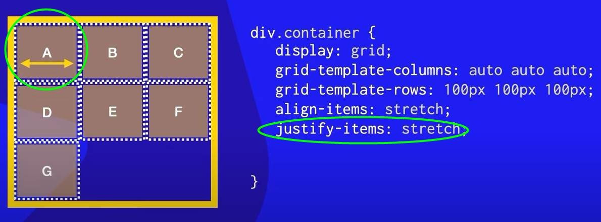Aplicando a propriedade justify-items com valor strech. -
start;
Faz com que os items grudem á esquerda pois o seu alinhamento é "horizontal" como podemos ver na imagem de exemplo abaixo: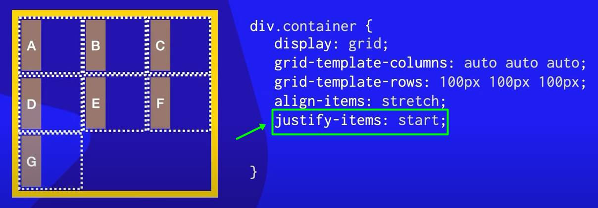Aplicando a propriedade justify-items com valor start. -
center;
O valor Center "Centraliza" os elementos/items "horizontalmente"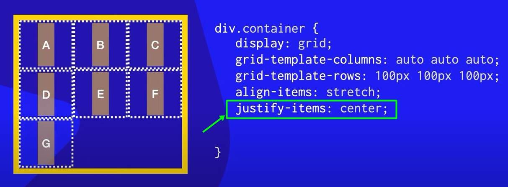Aplicando a propriedade justify-items com valor center. -
end;
O valor "end" Cola os elementos à direita.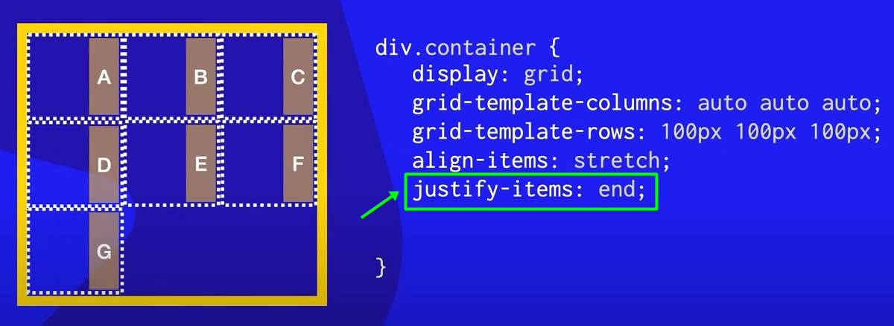Aplicando a propriedade justify-items com valor end.
Propriedades (align) e (justify) para {Container}.
9:00Para entendermos a aplicação das propriedades align e justify no container; No exemplo desta aula, o Container foi "aumentado de tamanho".
Propriedade alig-content: ; e seus valores:
9:30Abaixo temos os valores da propriedade para alinhamento do conteúdo dentro da Grid no sentido Vertical.
-
Por padrão;
Esta propriedade tem como valor start que faz com que todo conteúdo dentro da Grade, fiquem colados na "parte de cima", como podemos ver no exemplo da imagem abaixo, onde o content é envolto por "linhas vermelhas".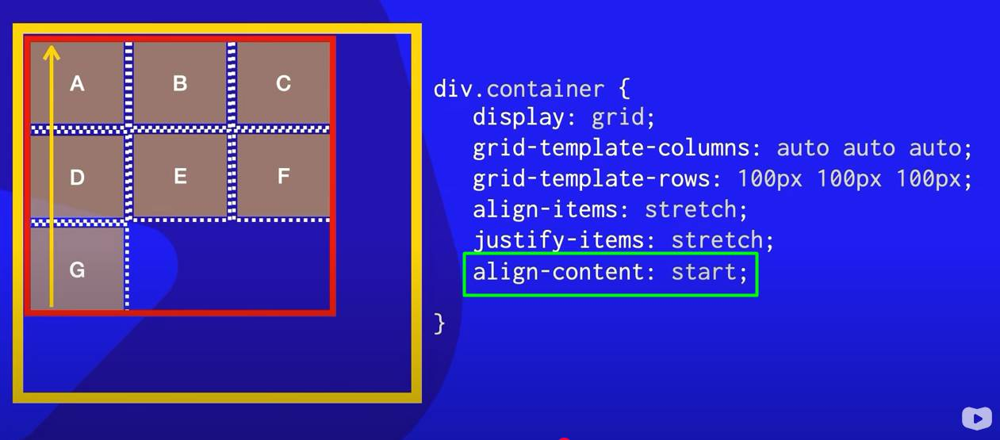Aplicando a propriedade align-content com valor padrão start. -
center;
O valor Center faz todo o conteúdo ficar 'centralizado verticalmente', e com espaços de cima e de baixo iguais, como podemos entender, vendo a imagem abaixo: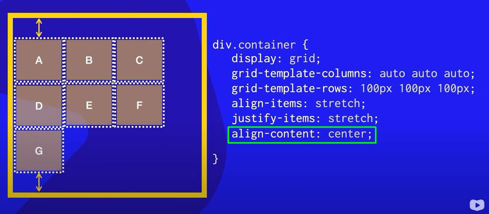Aplicando a propriedade align-content com valor center. -
end;
O valor "end" é usado para "colar verticalmente" o conteúdo em baixo.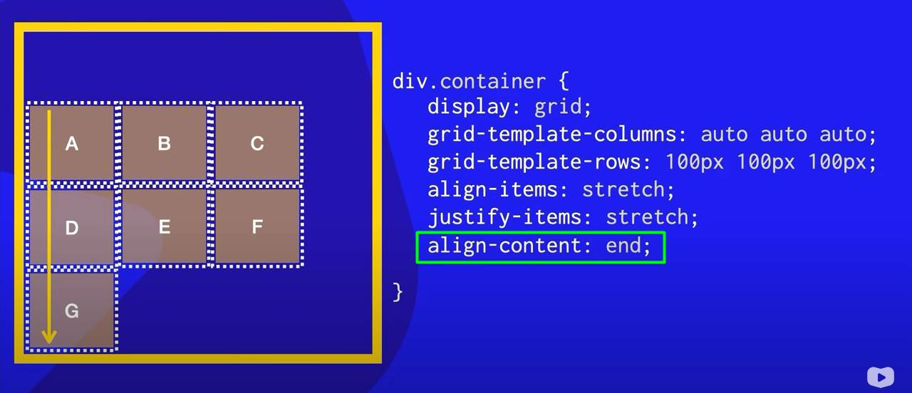Aplicando a propriedade align-content com valor end. -
space-between;
O valor "space-between" faz com que os primeiros elementos(primeira track) grude(em) em cima e faz os últimos elementos(últimas tracks) grudarem em baixo, e faz com os demais elementos se distribuam separados por "espaços iguais" entre as tracks, como podemos ver no exemplo abaixo: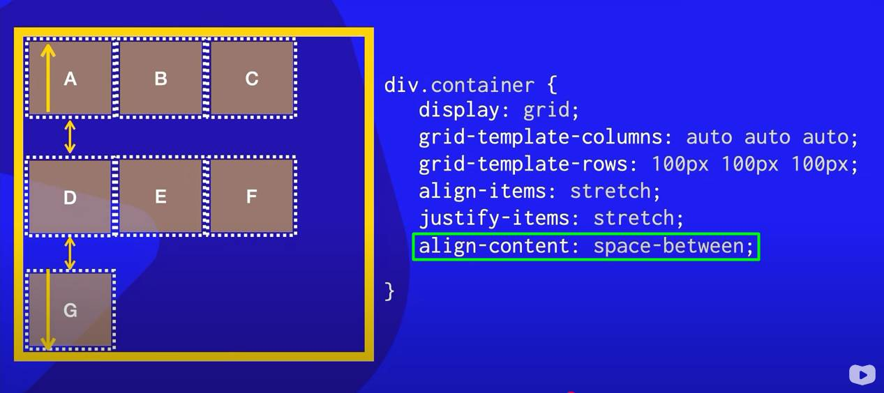Aplicando a propriedade align-content com valor space-between;. -
space-evenly;
O valor "space-evenly" Faz com as tracks tenham "espaços verticalmente iguais" entre si, e deixa o espaço da (primeira track) com o da (última track), iguais em relação a borda do Container, como podemos ver no exemplo abaixo;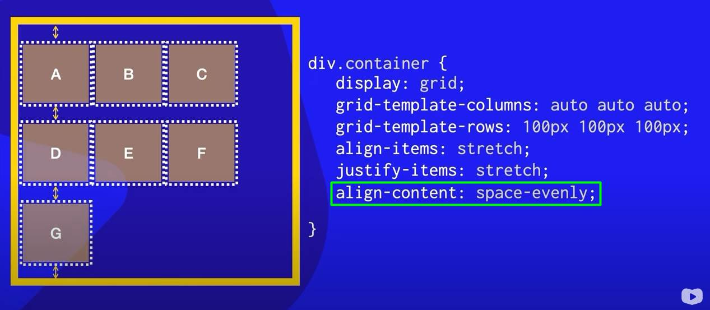Aplicando a propriedade align-content com valor space-evenly;. -
space-around;
O valor "space-around" Faz com que a "primeira e a última track" tenham espaços iguais em relação borda do Container, e este espaço é duas(2x) vezes calculado para espaçar as tracks de uma para outra."Observe"
as imagens abaixo com as marcações de espaços, e entenda um pouco mais: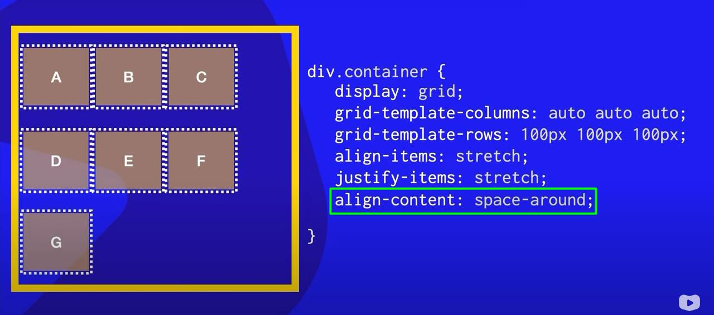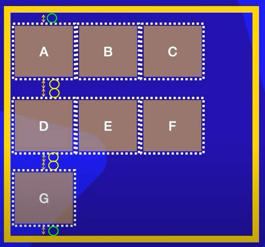Aplicando a propriedade align-content com valor space-around;. -
stretch;
O valor "stretch" Estica os items "verticalmente".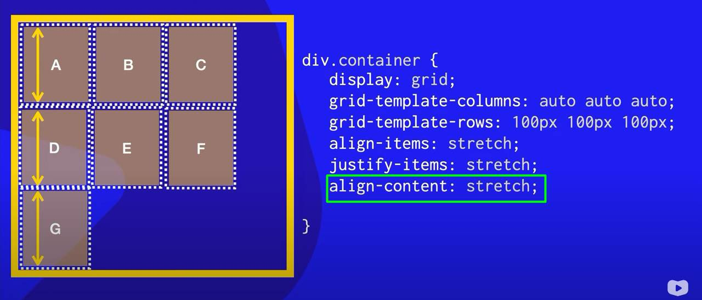Aplicando a propriedade align-content com valor stretch;.
Em outra palavras:
O space-around faz os espaços "ao redor" da tracks ficarem iguais entre si, e com o dobro do valor em relação ao espaço entre a (borda do container) e a "primeira e a última track".
Propriedade Justify-content: ; e seus valores:
14:15O justify-content faz o mesmo que o align-content, porém, seu alinhamento de conteúdo é na "horizontal".
-
O valor padrão é o start;
O qual pega todo o conteúdo (exemplificado pelas linhas vermelhas na imagem) e vai colar no lado esquerdo da Grid (exemplificada pela seta amarela), como podemos ver na imagem abaixo: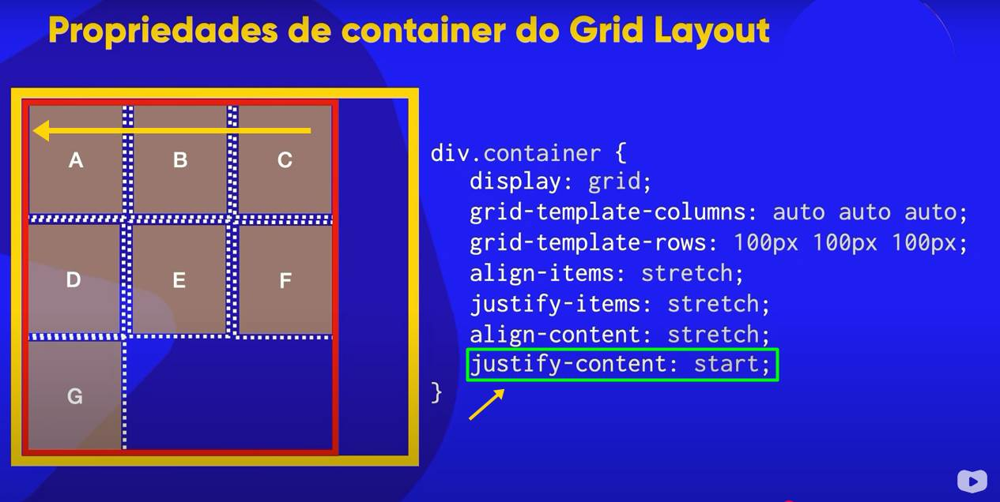Aplicando a propriedade justify-content com valor padrão start. -
center;
O valor Center Pega todo o bloco(conteúdo) e centraliza "horizontalmente".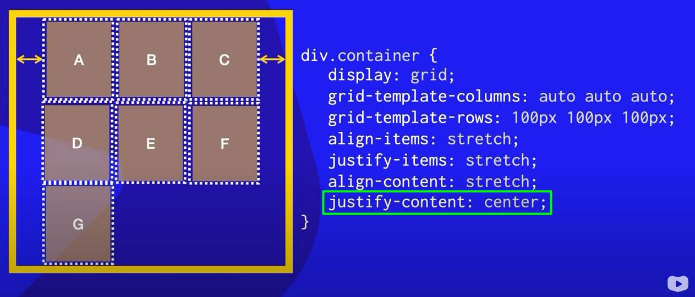Aplicando a propriedade justify-content com valor center. -
end;
O valor "end" Faz com que o conteúdo cole à direita do Container; Isto "horizontalmente".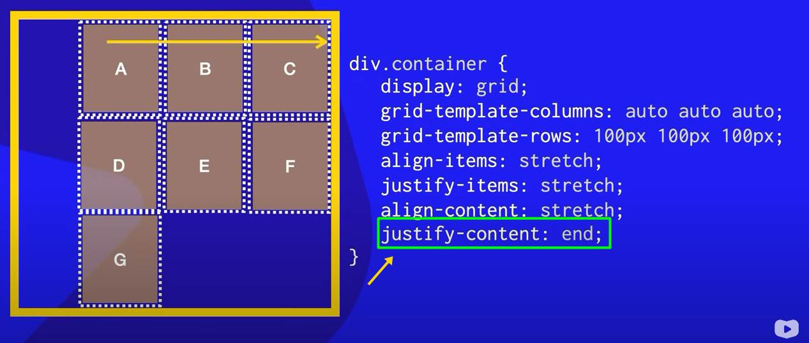Aplicando a propriedade justify-content com valor end. -
space-between;
O valor "space-between" Cola a "primeira e última track" na borda do Container, e deixa espaços iguais 'entre' as demais tracks na "horizontal".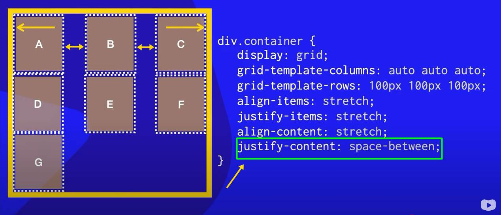Aplicando a propriedade justify-content com valor space-between;. -
space-evenly;
O valor "space-evenly" Faz com que as tracks tenhas espaços iguais 'entre si', e o mesmo em relação as tracks com as bordas do Container, como podemos ver na ilustração abaixo: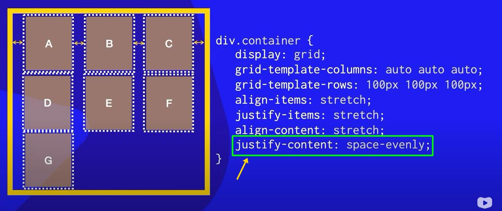Aplicando a propriedade justify-content com valor space-evenly;. -
space-around;
O valor "space-around" Faz com que o "espaço entre" as tracks sejam o 'dobro do valor do espaço' entre as tracks e as bordas do container;
Em outras palavras, podemos dizer que o espaço "ao redor" das tracks são iguais.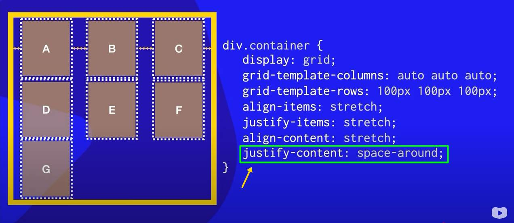Aplicando a propriedade justfy-content com valor space-around;.